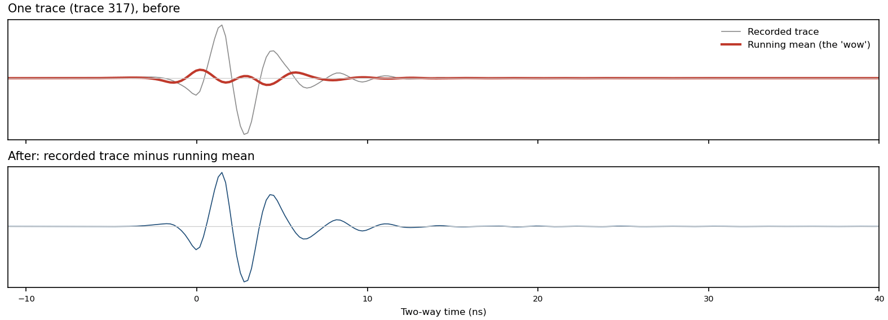
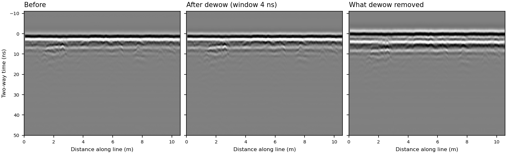
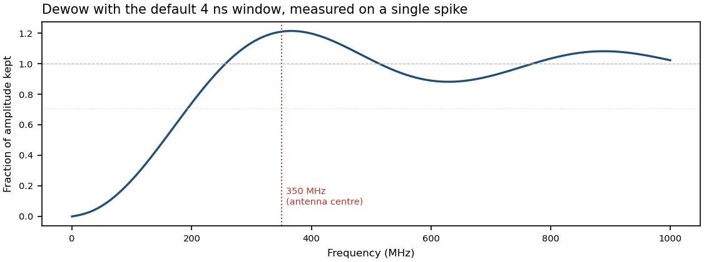

Dewow
In plain wordsA slow drift, taken away
Each time the radar sends a pulse into the ground, it records the signal that comes back over a very short span of time. That recording is called a trace. A trace can also contain a slow drift, called “wow”, that has nothing to do with what is buried. The drift shifts the trace up or down and changes only gradually, while echoes from buried objects rise and fall much faster. Dewow estimates the drift and removes it. At each point in the trace, it takes the average over a short stretch of time around that point and subtracts that average. What is left is the faster part of the signal, which carries the echoes.
PicturesWhat it does to a line


The methodA running mean, subtracted
In GPR processing, wow is the name for the low-frequency part of the recorded data. It shows up as a slow drift that decays down each trace, and is usually explained as the receiver electronics being swamped by the strong early arrivals (the air and ground waves) and then slowly recovering, or as inductive coupling between the antenna and the ground.
The usual fix, called dewow, is to estimate the slow part of each trace with a running mean and subtract it. A running mean is a moving average; because every sample in the window counts equally, it is also called a boxcar filter. For a trace x(t) and a window of length W:
A running mean is a low-pass filter: it keeps slow changes and smooths away fast ones. Subtracting it from the original therefore makes a high-pass filter, which takes away slow changes and keeps fast ones. In frequency terms, the fraction of each frequency f that survives, by amplitude, is
where sinc is the frequency response of a boxcar. Other software estimates the slow part in other ways: the free GPR package RGPR, for example, offers a running median, a running mean or a Gaussian filter for its dewow. nsgeo uses the running mean.

SettingsWhat you can change
Window ns · default 4
How long a stretch of time is averaged at each point. A longer window gives a smoother average that follows only the slowest changes, so less is removed. A shorter window lets the average follow quicker changes, so more is removed, including more of the radar pulse.
The window is used as a whole number of samples: W divided by the sample interval, rounded (one sample is 0.2165 ns on the campus line). The table gives the window actually used.
Very short windows. A window that rounds to zero samples is refused: the step stops with an error saying the window is “shorter than one sample”. Despite that wording, the refusal covers only windows up to half a sample (0.108 ns on the campus line). A window that rounds to exactly one sample, about 0.11 to 0.32 ns on the campus line, is accepted and removes everything: the average of one sample is that sample, so every value comes out zero, with no warning. This is nsgeo issue #40. Negative windows are refused outright.
| Window | Samples used (campus line) | More than half the power removed below | Strongest boost |
|---|---|---|---|
| 2 ns | 9 (1.95 ns) | ≈ 389 MHz | +23% near 737 MHz |
| 4 ns (default) | 18 (3.90 ns) | ≈ 193 MHz | +21% near 366 MHz |
| 8 ns | 37 (8.01 ns) | ≈ 95 MHz | +22% near 179 MHz |
Measured by running nsgeo’s dewow on a single spike at the campus line’s sample interval. Both frequency columns scale with the window. From the formula in “The method”, the half-power point is about 0.75 / W and the boost peaks near 1.43 / W, where W is the window actually used.
Things to knowSide effects
- It can’t tell wow from slow parts of the real signal. Anything slower than the window is treated as drift, including the low-frequency part of genuine reflections. The campus line has almost no drift to begin with: its raw traces already average to almost exactly zero (in 95% of them the mean is under 0.05% of the trace’s RMS amplitude). On this line dewow removes 2.9% of the energy, and 99.5% of that comes from before 10 ns two-way time, where the radar pulse itself arrives (see the pictures).
- It boosts some frequencies a little. A running mean lets through some of the signal that is faster than its window, and can put peaks where the data has troughs. Subtracting it then adds that part back on top of the original, so frequencies around 1.43 / W come out stronger: by 21% to 23% for the three windows in the Settings table (measured). With the default window the peak is near 366 MHz, close to the 350 MHz in the campus antenna’s model name (HS350US).
- It works on one trace at a time. Neighbouring traces are never compared. A feature that repeats in every trace, such as a flat band along the whole line, is filtered like everything else in its trace, not singled out. Removing what repeats from trace to trace is what the background-removal steps do.
- The top and bottom of each trace are averaged over fewer samples. Near the ends there isn’t a full window, so the average uses fewer samples and the edges are high-passed less strongly (details below).
- One bad value spoils the rest of its trace. If a trace contains a NaN (not-a-number) or an infinite value, for example from an earlier step, every sample from just under half a window above it to the bottom of that trace comes out NaN or infinite, not only the samples whose window contains it. On the campus line, one NaN at sample 100 of a trace turns 420 of its 512 samples into NaN. Other traces are unaffected. This is nsgeo issue #43.
How nsgeo does itThe exact computation
Each trace is a column of n samples x0 … xn−1, spaced Δt apart, held as 64-bit floats. The window in nanoseconds, W, becomes a whole number of samples with Python’s round, which sends exact halves to the even neighbour:
If w < 1 the step raises an error (“shorter than one sample; nothing to remove”). If w = 1 the running mean is a copy of the trace, so y = 0 everywhere (issue #40). If w is longer than the trace, it is cut to n. For every sample i, the averaging window runs from loi up to (but not including) hii:
The output is 64-bit floats with the same shape, sample interval and start time as the input.
Choices this makes that the textbook formula doesn’t
- Rounding. The window actually used is w·Δt, not W. On the campus line, 4 ns becomes 18 samples, or 3.90 ns.
- Shrinking edges. The trace is not padded. Within about half a window of the top or bottom, the mean is taken over fewer samples: at i = 0 only the first w − h, and at i = n − 1 only the last h + 1 (9 and 10 at the default window on the campus line). The edges are therefore high-passed less strongly than the middle.
- Even windows are off-centre by half a sample. For even w, the window covers h samples before i and h − 1 after. With 18 samples that is 9 before and 8 after, so the subtracted mean is centred half a sample (≈ 0.11 ns on the campus line) early. Odd windows are centred.
- Discrete response. Away from the edges, the subtracted mean’s response is Dw(f) = sin(πf wΔt) / (w sin(πfΔt)), the sampled cousin of the sinc above. In signal processing this periodic sinc is also called the Dirichlet kernel, the frequency response of a discrete moving average. For odd w, H(f) = 1 − Dw(f); for even w, the half-sample offset adds a phase, H(f) = 1 − Dw(f) e−iπfΔt. Well below the Nyquist frequency (about 2300 MHz here) both stay close to the continuous formula: below 1000 MHz they differ from it by at most 0.011 for the three windows in the Settings table (measured). They also explain why the table’s peaks differ slightly from the continuous formula’s 1.217: 1.227 at 9 samples, where the periodic sinc departs from the sinc, and 1.214 at 18 samples, lowered by the half-sample offset. The response figure was measured, and it matches these formulas to rounding error.
- Speed. The sums come from a cumulative sum, S0 = 0 and Sk = x0 + … + xk−1, so that mi = (Shi − Slo) / (hi − lo) and the cost doesn’t depend on the window length. The result matches a direct sum up to floating-point rounding; on the campus line, whose samples are whole numbers, the two agree exactly. The cumulative sum is also why one NaN or infinite value spreads to the bottom of its trace (issue #43).
Source: nsgeo/processing/dewow.py and running_mean in nsgeo/processing/_util.py, under packages/nsgeo-core/src/.
Further readingSources
- Cassidy, N. J. (2009). Ground penetrating radar data processing, modelling and analysis. In H. M. Jol (Ed.), Ground Penetrating Radar: Theory and Applications (pp. 141–176). Elsevier. doi:10.1016/B978-0-444-53348-7.00005-3. The volume’s processing chapter, and the source of the account of wow in “The method”.
- Annan, A. P. (2009). Electromagnetic principles of ground penetrating radar. In the same volume (pp. 1–40). doi:10.1016/B978-0-444-53348-7.00001-6. The volume’s opening chapter, on the physics behind GPR.
- Conyers, L. B. (2013). Ground-Penetrating Radar for Archaeology (3rd ed.). AltaMira Press.
- Huber, E. (2020). Basic GPR data processing. RGPR tutorial, free online. Its “Dewow” section lists the three filters RGPR offers.
- Wikipedia: Ground-penetrating radar · Moving average · Low-pass filter · High-pass filter · Sinc function · Dirichlet kernel · Prefix sum